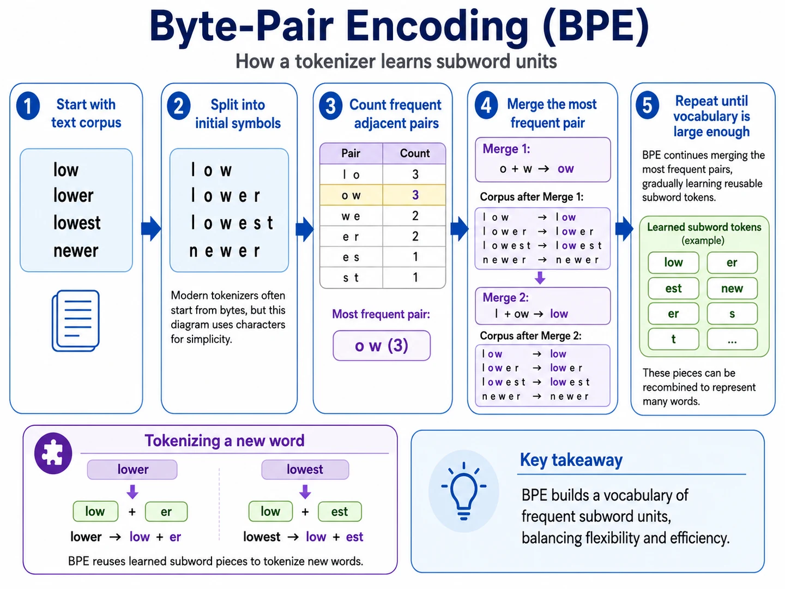
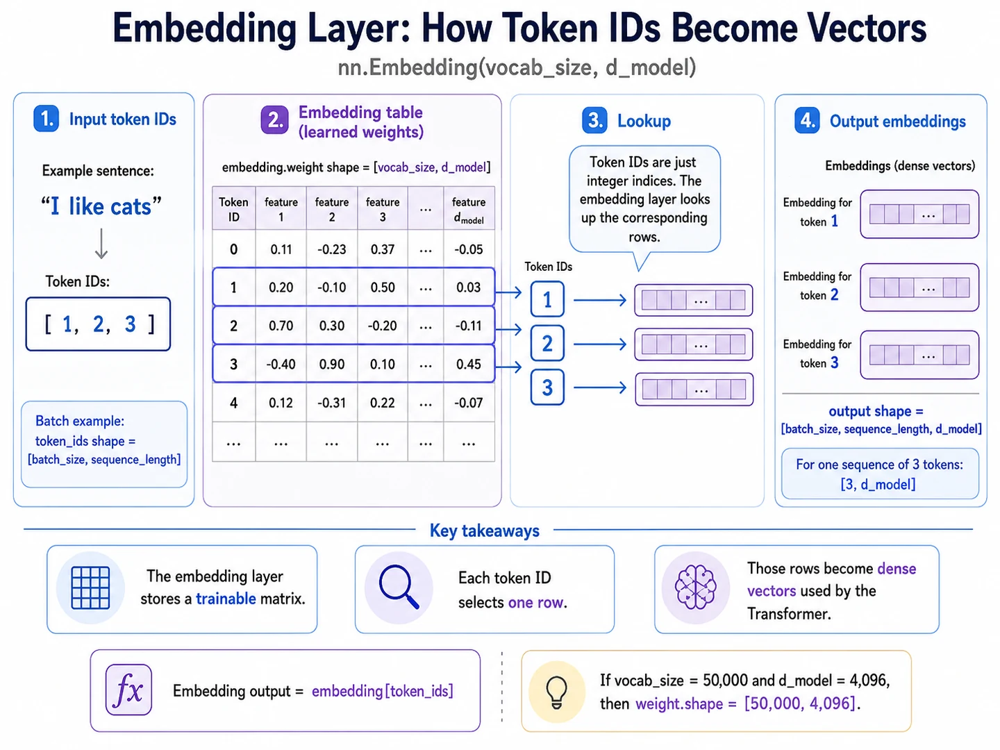

Lesson 10 of 23 · LLM preliminaries
Text becomes IDs, then learned vectors.
Your win: explain the two distinct operations that turn a string into the \(B\times T\times d_{\text{model}}\) tensor consumed by a decoder.
Tokenization chooses reusable text pieces
A tokenizer maps text to a sequence of vocabulary entries. Character tokenization is simple but long; whole-word tokenization is compact but struggles with unseen words. Subword tokenizers reuse common pieces such as low, er, and est.

Numbers substituted: one short sequence
Suppose the tokenizer returns:
The integers are labels, not meanings. Token ID \(2\) does not mean “twice as much” as token ID \(1\).
Embedding lookup selects matrix rows
Let the vocabulary size be \(V=5\) and model width be \(D=3\). The learned embedding table is \(E\in\mathbb R^{5\times3}\). For the IDs \([1,2,3]\):

Code checkpoint · lookup preserves batch and time
Show the PyTorch embedding lookup
import torch
from torch import nn
token_ids = torch.tensor([[1, 2, 3], [3, 2, 1]]) # [B=2, T=3]
embedding = nn.Embedding(num_embeddings=5, embedding_dim=3)
x = embedding(token_ids) # [B=2, T=3, D=3]
assert x.shape == (2, 3, 3)Trace it: Which output axis comes from embedding_dim, and which two axes came directly from token_ids?
Retrieval check
What does token ID \(37\) do inside an embedding layer?
Practice before moving on
- Explain one tradeoff between character tokens and whole-word tokens.
- If \(V=32{,}000\) and \(D=512\), what is the embedding-weight shape?
- For token IDs with shape \(4\times128\), what is the embedding output shape when \(D=512\)?
- Using the displayed matrix \(E\), write the vector selected by token ID \(4\).
- Why is token ID \(200\) not numerically “larger in meaning” than token ID \(10\)?
- State the full pipeline from a text string to hidden-state tensor \(X\).
Check solutions
- Characters handle unseen text but create longer sequences; whole words create shorter sequences but require a huge vocabulary and fail on unseen forms.
- \(32{,}000\times512\).
- \(4\times128\times512\).
- \((0.0,0.2,0.4)\).
- IDs are arbitrary vocabulary indices, not ordered measurements.
- Text → tokenizer → token IDs \([B,T]\) → embedding lookup → \(X\in\mathbb R^{B\times T\times D}\).
Sources: Sennrich et al., Neural Machine Translation of Rare Words with Subword Units; PyTorch nn.Embedding.